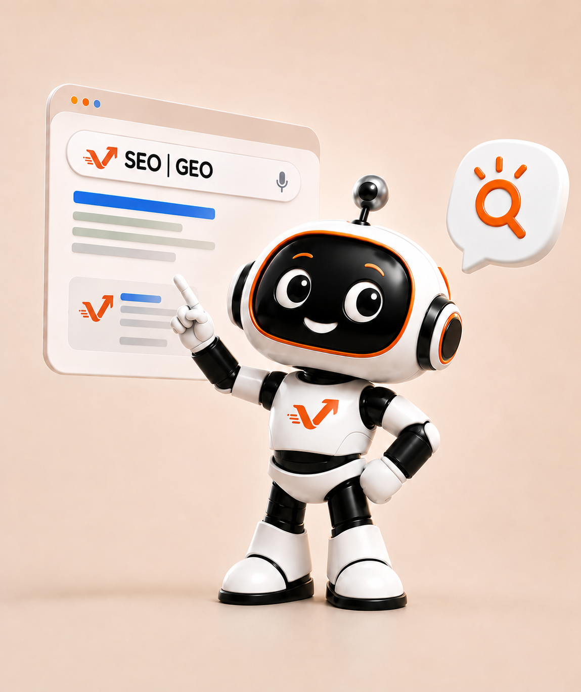

01 — HÄUFIGE FRAGEN
Kurz gefragt. Klar beantwortet.
Was Betriebe uns am häufigsten fragen — zu Kosten, Daten, Vorwissen und dem ersten Schritt. Steht Ihre Frage nicht dabei, schreiben Sie uns.

02 — ÜBER VAIACON
Wer wir sind und was wir tun.

Was macht vaiacon?
vaiacon befähigt Schweizer KMU, KI verständlich, persönlich und wirksam im Unternehmen einzusetzen. Wir verbinden Lernen, Automatisierung und langfristige Begleitung.
Ist vaiacon eine klassische KI-Agentur?
Nein. KI ist für uns ein Werkzeug. Im Zentrum stehen verständliche Einführung, konkrete Abläufe und eine Umsetzung, die im Alltag funktioniert.
Brauche ich technisches Vorwissen?
Nein. Die Inhalte und die Umsetzung werden so erklärt, dass Unternehmer und Mitarbeitende ohne technisches Vorwissen mitkommen.
Wie beginnt eine Zusammenarbeit?
Am Anfang steht ein unverbindliches Gespräch. Danach klären wir, ob Learning, Bot, Service oder eine Kombination davon sinnvoll ist.
03 — DIE ANGEBOTE
Was sich hinter den Namen verbirgt.
Was ist vaiaconAcademy?
Unsere Selbstlern-Plattform: 11 Lernpfade mit 58 kurzen Lektionen zu KI im KMU-Alltag. Alle Lektionen sind kostenlos — kein Abo, keine Verpflichtungen. Zur Academy →
Was ist vaiaconLearning?
Trainings, Coachings und Workshops bei Ihnen im Betrieb, damit Unternehmer und Teams KI sicher anwenden können. Zu Learning →
Was ist vaiaconBot?
Unser Ansatz für wiederkehrende Büro- und Administrationsprozesse: Wir analysieren Abläufe, priorisieren Hebel und setzen passende Automatisierungen um. Zu Bot →
Was ist vaiaconService?
Begleitung bestehender Automatisierungen im Betrieb: Pflege, Updates, Kontrolle und Weiterentwicklung nach Bedarf. Zu Service →
Was ist vaiaconVisibility?
Sichtbarkeit im Netz: SEO für Suchmaschinen und GEO für KI-Antworten, damit Ihr Angebot gefunden und verstanden wird. Zu Visibility →
04 — GELD UND DATEN
Die zwei Fragen, die alle stellen.
Was kostet eine Automation?
Eine Automation beginnt bei CHF 600. Den Fixpreis nennen wir nach der Erstanalyse — Sie wissen vor der Umsetzung, woran Sie sind. Rechnet sich eine Automation nicht, sagen wir das.
Was passiert mit unseren Daten?
Wir arbeiten nach dem revDSG. Vor der Umsetzung klären wir mit Ihnen, welche Daten ein Werkzeug überhaupt sehen darf, und halten Kundendaten dort heraus, wo sie nicht hingehören.
Kostet die Academy etwas?
Nein. Alle Lernpfade und Lektionen sind offen — ohne Konto, ohne Anmeldung, ohne versteckte Kosten. Lizenzen fremder KI-Werkzeuge sind davon nicht betroffen; wo eine nötig wird, sagen wir es vorher.
05 — NÄCHSTER SCHRITT
Ihre Frage steht nicht dabei?
Schreiben Sie uns. Wir antworten selbst — nicht aus einem Chatfenster, sondern als die zwei Menschen, die hier arbeiten.